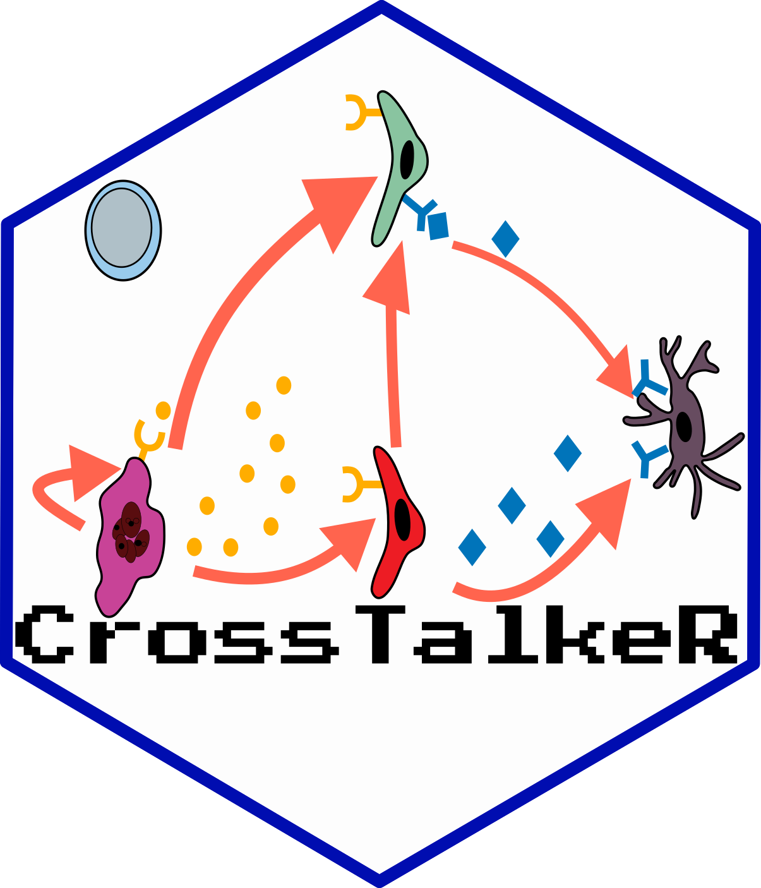

Plot an intracellular Receptor -> TF -> Ligand sankey from pre-scored lists
Source:R/plot.R
plot_graph_sankey_tf_custom.RdAlternative to plot_graph_sankey_tf() for the case where the
receptor -> transcription-factor and transcription-factor -> ligand edges
have already been individually filtered, ranked and scored. It takes the two
edge tables exactly as supplied and only lays out and renders the graph.
Usage
plot_graph_sankey_tf_custom(
gene_list1,
gene_list2,
cluster,
pagerank_table,
score_name = "LRScore",
min_max_val = 1,
legend_name = "Intracellular Scoring",
title = "Intra",
size_node = "fixed_size",
colors = c("#2c7bb6", "#84b0d1", "#ebebeb", "#f88e5f", "#bb001c")
)Arguments
- gene_list1
data.frame of receptor -> TF edges. Must contain
gene_A(receptor),gene_B(TF), the column named byscore_name, andAvgTFScore.- gene_list2
data.frame of TF -> ligand edges. Must contain
gene_A(TF),gene_B(ligand), the column named byscore_name, andAvgTFScore.- cluster
cluster name; used to build the
cluster/genekeys that are looked up inpagerank_table.- pagerank_table
data.frame with columns
nodes(formatted ascluster/gene) andPagerank, indexable by rowname.- score_name
column in the gene lists used to colour the edges. Default "LRScore".
- min_max_val
symmetric limit for the diverging edge colour scale; edges are clipped to
[-min_max_val, min_max_val]so colours are comparable across plots. Default 1.- legend_name
title of the edge-colour legend. Default "Intracellular Scoring".
- title
plot title. Default "Intra".
- size_node
node-sizing mode:
"fixed_size"(all non-TF nodes equal),"score_size"(TF nodes scaled byabs(AvgTFScore), others fixed) or any other value (raw pagerank). Default "fixed_size".- colors
five-stop colour vector for the edge gradient (low -> mid -> high).
Value
A ggraph/ggplot object. Print it to display, or pass it to
ggplot2::ggsave() to save with any device.
Examples
if (FALSE) { # \dontrun{
# gene_list1 / gene_list2 are built by the caller with any custom
# filtering and scoring, then handed to the renderer:
p <- plot_intracellular_sankey(
gene_list1 = my_receptor_tf_edges,
gene_list2 = my_tf_ligand_edges,
cluster = "Tumor",
pagerank_table = pagerank_tbl,
score_name = "LRScore",
size_node = "score_size"
)
p # display in the current device
ggplot2::ggsave("intra.pdf", p, width = 8, height = 8,
device = grDevices::cairo_pdf) # or save it yourself
} # }